La pizza si impara con le mani in pasta.
La scuola di Marco Manzi, pizzaiolo di Giotto. Corsi di pizza napoletana, pizza in teglia e grandi lievitati per chi ama cucinare e per chi vuole farne il proprio mestiere.
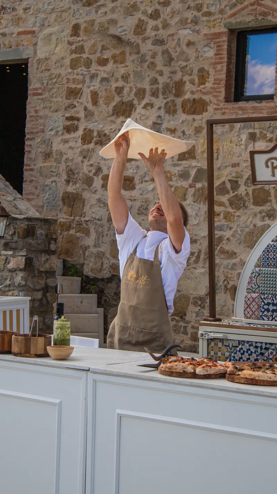
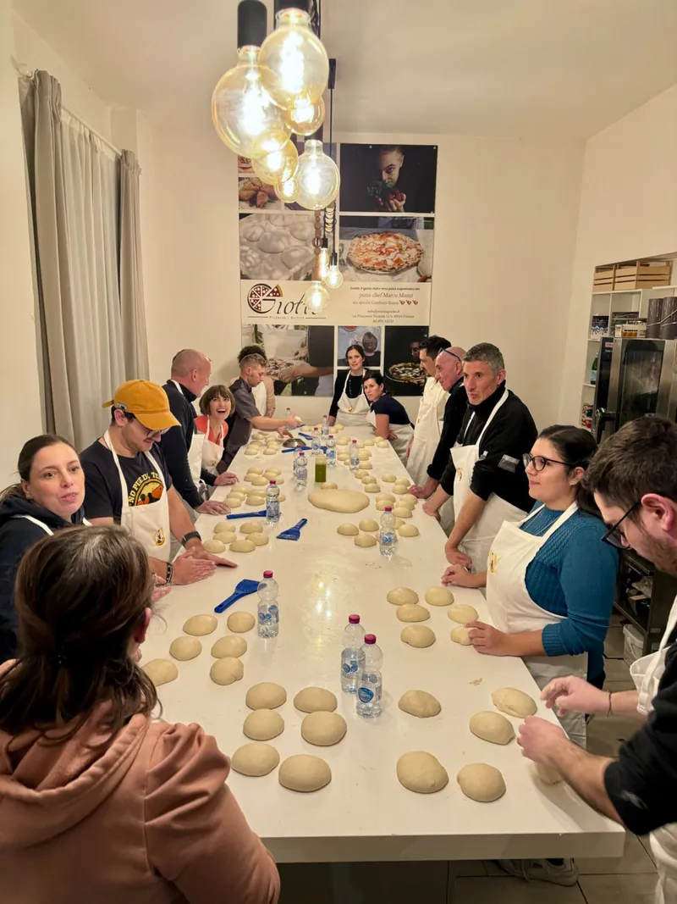
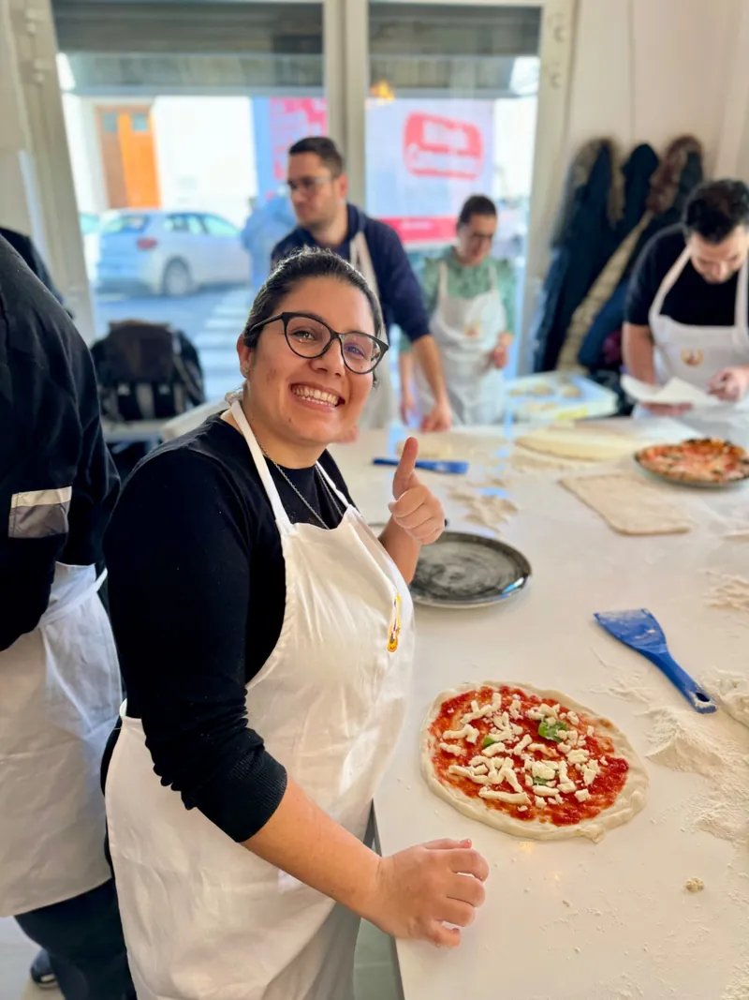
Oltre 10 anni a insegnare l'arte bianca
Scuola Mani in Pasta nasce dal desiderio di Marco Manzi di condividere quello che fa ogni giorno in pizzeria con chi ha voglia di imparare.
In oltre dieci anni di lavoro abbiamo formato più di 10.000 studenti: appassionati che volevano fare una pizza vera a casa, ragazzi che cercavano un mestiere, pizzaioli che volevano crescere. L'obiettivo è sempre lo stesso, diffondere la cultura dell'arte bianca e insegnarla nel modo in cui la viviamo noi, con metodo e con passione.
I corsi si tengono a Firenze, nel laboratorio della prima pizzeria Giotto in via Francesco Veracini. Si lavora sugli stessi banchi, con gli stessi forni e le stesse farine che usiamo ogni sera per i nostri clienti.
Conosci Marco ManziPerché scegliere i nostri corsi
Attraverso i nostri corsi scopri i segreti della pizza napoletana, della pizza in teglia e della piccola pasticceria lievitata. Sono pensati per appassionati, per chi cucina a casa e per i professionisti che vogliono migliorarsi ogni giorno.
Impari da chi lo fa ogni giorno
Ogni corso è ideato e coordinato da Marco Manzi, pizzaiolo pluripremiato e alla guida delle pizzerie Giotto di Firenze.
Teoria e tanta pratica
Farine, lievitazione, impasto, stesura e cottura. Spieghiamo il perché di ogni passaggio, poi lo fai tu con le tue mani.
In un vero laboratorio
Lavori nella sede storica di Giotto, con forni e attrezzature professionali, non in un'aula improvvisata.
Posti limitati
Gruppi piccoli per seguire ognuno da vicino, correggere il gesto e rispondere a tutte le domande.
Attestato di partecipazione
Alla fine del corso ricevi l'attestato firmato da Marco Manzi e da Scuola Mani in Pasta.
Dalla scuola al lavoro
Chi vuole farne un mestiere può seguire il percorso professionale e iniziare a lavorare nelle nostre pizzerie.
Scegli il corso giusto per te
Dal primo impasto fatto a casa fino al banco di una pizzeria. Ogni percorso è guidato da Marco Manzi.
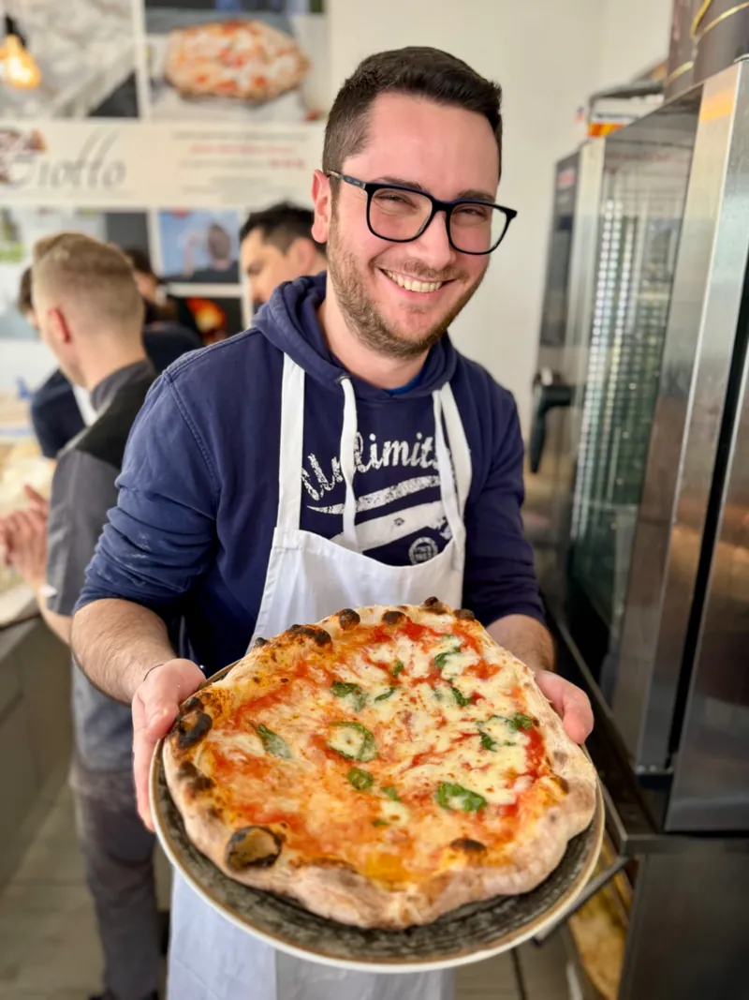
Il più richiestoCorso pizza napoletana e in teglia
Due giorni per imparare le basi: farine, lievitazione, biga, impasto a mano e con impastatrice, stesura e cottura di napoletana e teglia.
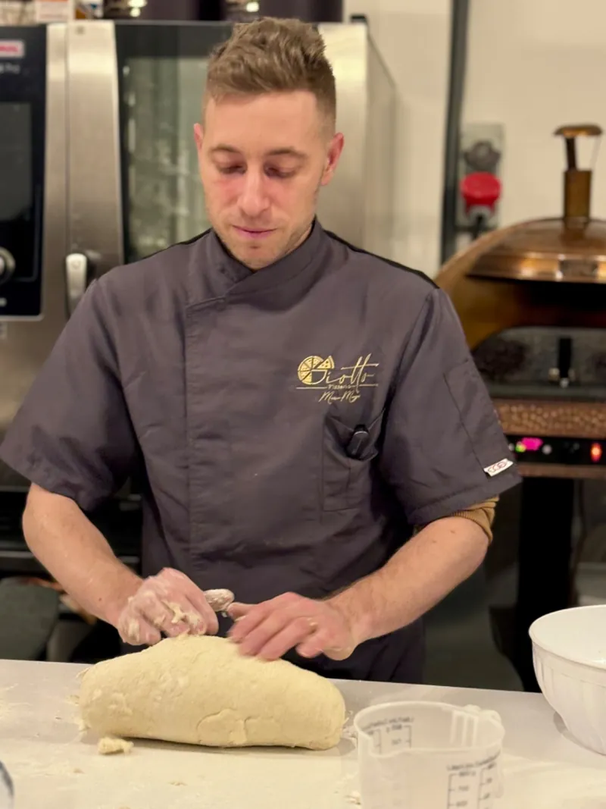
ProfessionaleDiventa pizzaiolo professionista
Un percorso su misura: formazione con Marco, pratica nelle nostre pizzerie e la possibilità di iniziare un periodo di lavoro retribuito da noi.
 Esperienza
EsperienzaCorso & Degustazione
Una serata per impastare, infornare e gustare insieme la vera pizza napoletana, con acqua, birra e vino inclusi.
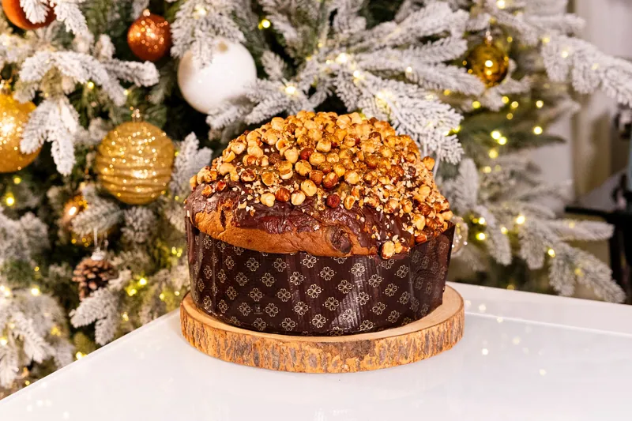
28–29 novembrePanettone artigianale
Lievito madre, primo e secondo impasto, pirlatura e cottura. A fine corso porti a casa il tuo panettone.
 Aziende
AziendeConsulenze per pizzerie
Apertura e avviamento di nuove pizzerie, impasti, menu e formazione dello staff. Oltre 30 locali aperti in tutta Italia.
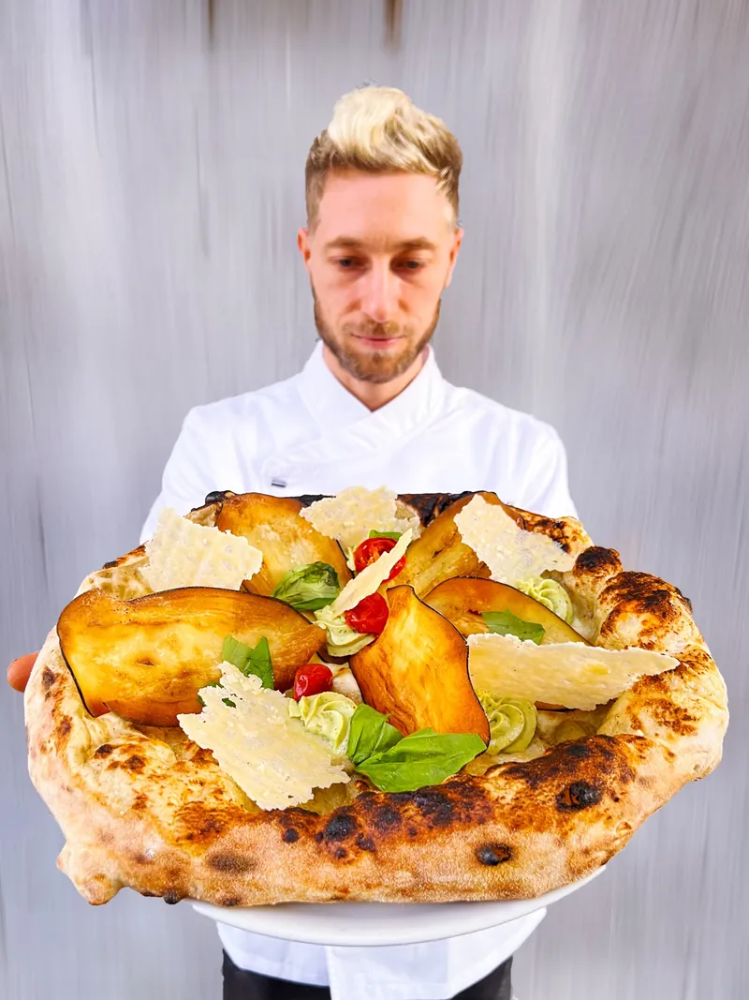
Chi è Marco Manzi
Nato a Forio d'Ischia, Marco si innamora della pizza da giovanissimo, sull'isola. Si forma anche come pasticciere, poi si trasferisce a Firenze e inizia la sua carriera da pizzaiolo “fuori sede”.
A Firenze apre Giotto, nel quartiere di Novoli. Oggi le pizzerie Giotto in città sono quattro e nel 2026 Giotto è la prima pizzeria di Firenze nella classifica 50 Top Pizza Italia.
“Il miglior modo per definirmi è con il titolo di Pizzaiolo. Uno status che ha l'odore della storia e della cultura della mia terra.”
Per Marco i riconoscimenti non sono solo suoi, ma di tutta la squadra a cui ha trasmesso la sua passione. Da qui l'idea di condividere quello che sa con chiunque voglia imparare: nasce Scuola Mani in Pasta, per professionisti e per appassionati.
Marco Manzi
Il lavoro di ogni giorno, riconosciuto
Le guide più importanti del settore premiano da anni la pizza di Giotto. Gli stessi impasti e lo stesso metodo che insegniamo nei nostri corsi.
Tre Spicchi
Il massimo riconoscimento della guida Pizzerie d'Italia del Gambero Rosso, confermato per più edizioni.
28ª in Italia
Giotto entra nella top 30 della guida 50 Top Pizza Italia ed è la prima pizzeria di Firenze in classifica.
Cinque anni consecutivi
Per il quinto anno di fila tra le migliori pizzerie d'Italia della guida 50 Top Pizza.
Pizzeria Verace
Il riconoscimento che certifica il rispetto della tradizione della vera pizza napoletana.
Miglior panettone di Firenze
Il panettone artigianale di Giotto premiato come il migliore della città.
1° classificato
Primo posto come miglior panettone al cioccolato.
Cosa dicono i nostri corsisti
Scuola Mani in Pasta non è semplicemente una scuola o un corso: per molti dei nostri corsisti, che ci seguono da anni, è diventata una famiglia.
“Ero abbastanza scettico sull'effettiva efficacia del corso. Mi sono ricreduto dopo pochi minuti di lezione. In modo essenziale, chiaro e incisivo, vengono spiegati tutti i passaggi per riuscire a preparare al meglio la pizza. Consigliatissimo soprattutto per chi vuole approcciarsi per la prima volta a questo mondo.”Corso pizza napoletana e in teglia
“Ciò che mi ha colpito di più del corso è la cura dei dettagli. Dalla storia della pizza fino alle particolarità degli impasti. Ho avuto qualche esperienza nel settore ma questo corso è stato capace di trasmettermi l'autonomia necessaria nell'essere più sicuro durante la preparazione della pizza.”Corso pizza napoletana e in teglia
“Un corso fondamentale! L'unica cosa che mi dispiace è l'aver seguito in precedenza già due corsi con altri. Totalmente inutili. Se avessi scoperto prima questo corso non mi sarei scoraggiato! Il corso ha la capacità di mettere a proprio agio l'utente, immergendolo completamente in questa arte. Dalla lievitazione alla cottura, tutto è spiegato bene e in modo coinvolgente.”Corso pizza napoletana e in teglia
Le mani in pasta dei nostri corsisti
Seguici su Instagram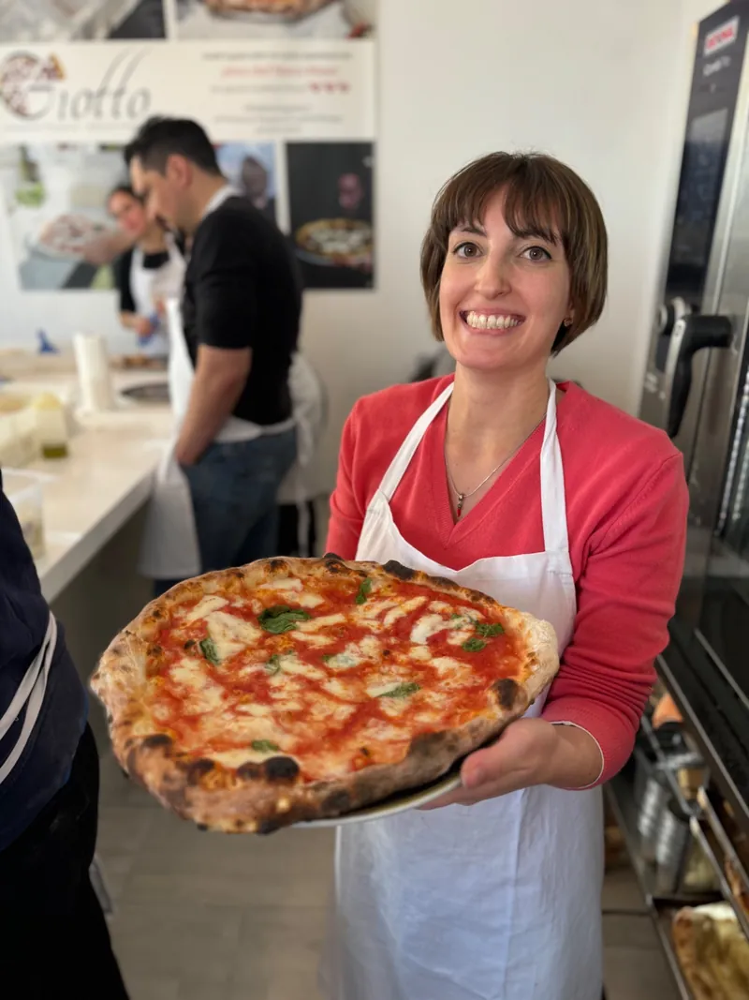

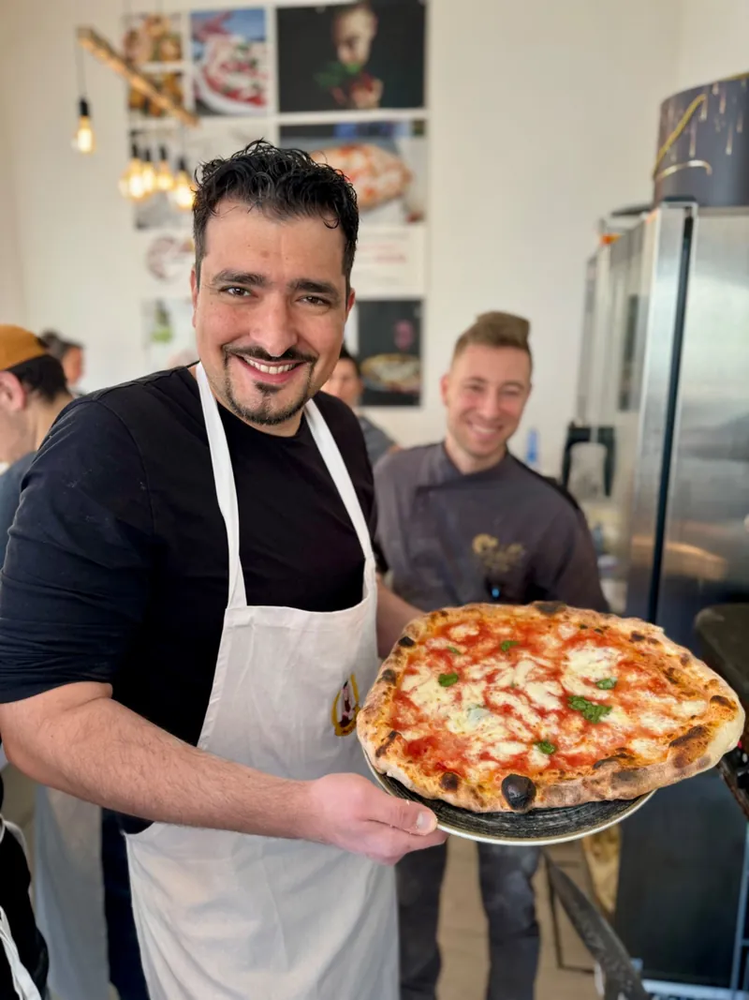
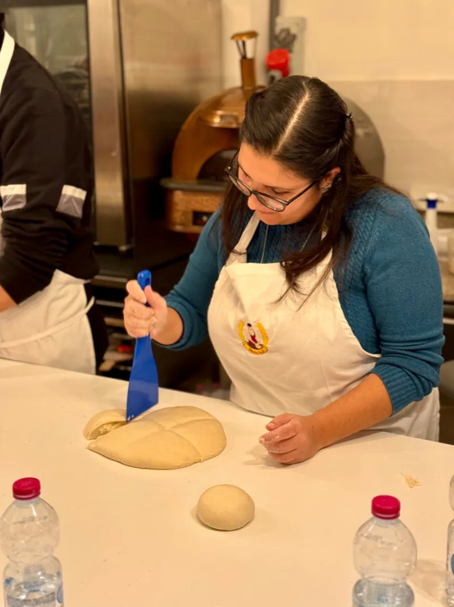
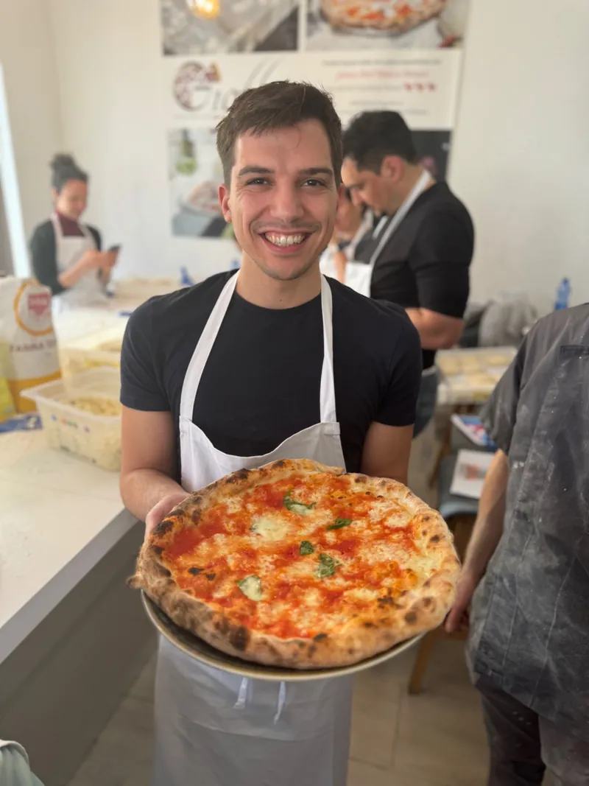
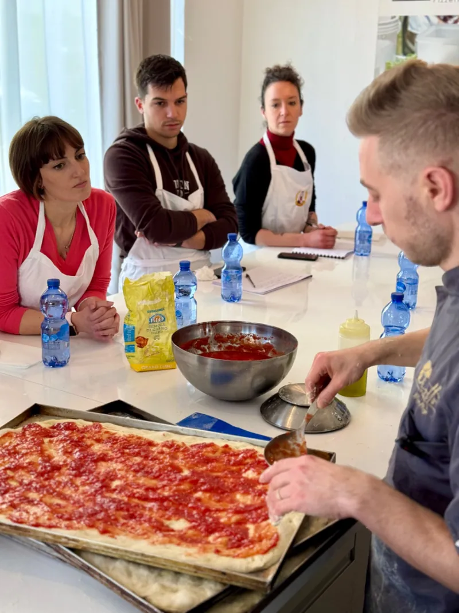
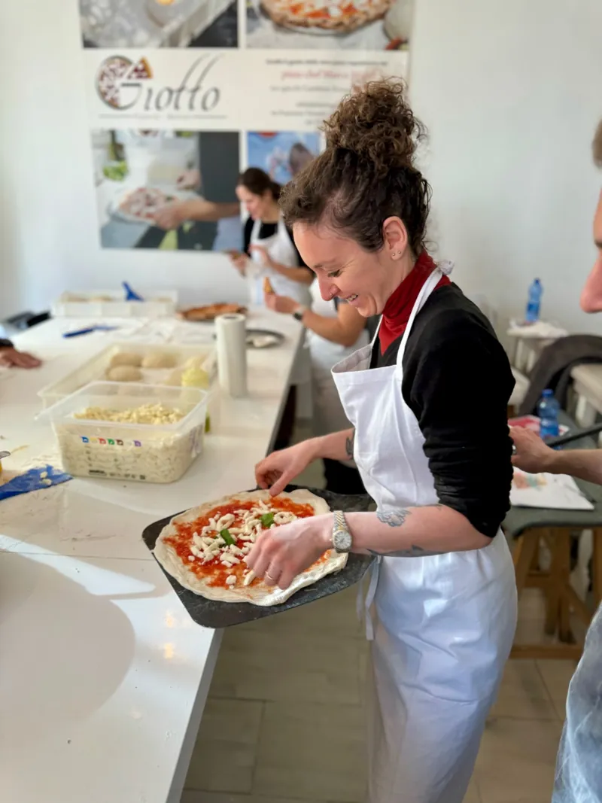
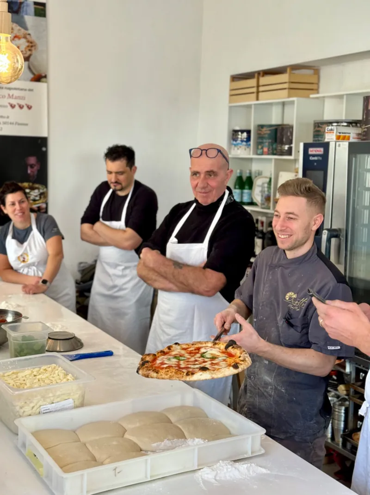
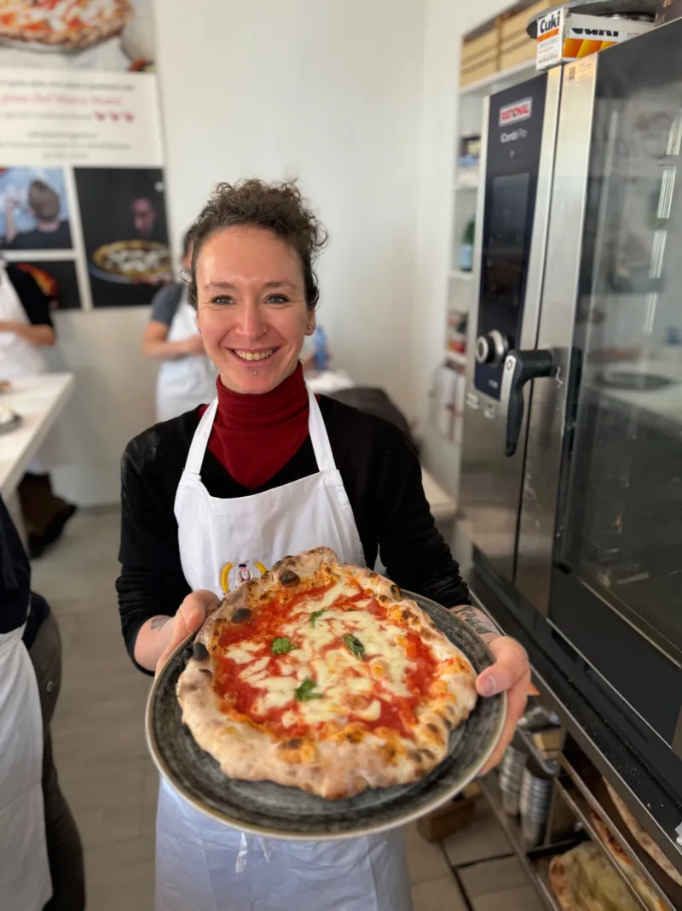

Vieni a trovarci a Firenze
I corsi si tengono nella sede storica della pizzeria Giotto, a Novoli. Per informazioni e iscrizioni scrivici su WhatsApp o compila il modulo.
- IndirizzoAssociazione Scuola Mani in Pasta
Via Francesco Veracini, 50144 Firenze - WhatsAppScrivici su WhatsApp
- Telefono+39 055 332332
Scrivici
Compila il modulo: ti rispondiamo su WhatsApp.
Richiesta pronta
Abbiamo ricevuto i tuoi dati. Se WhatsApp non si è aperto, tocca il pulsante qui sotto per inviarci il messaggio.
Apri WhatsApp